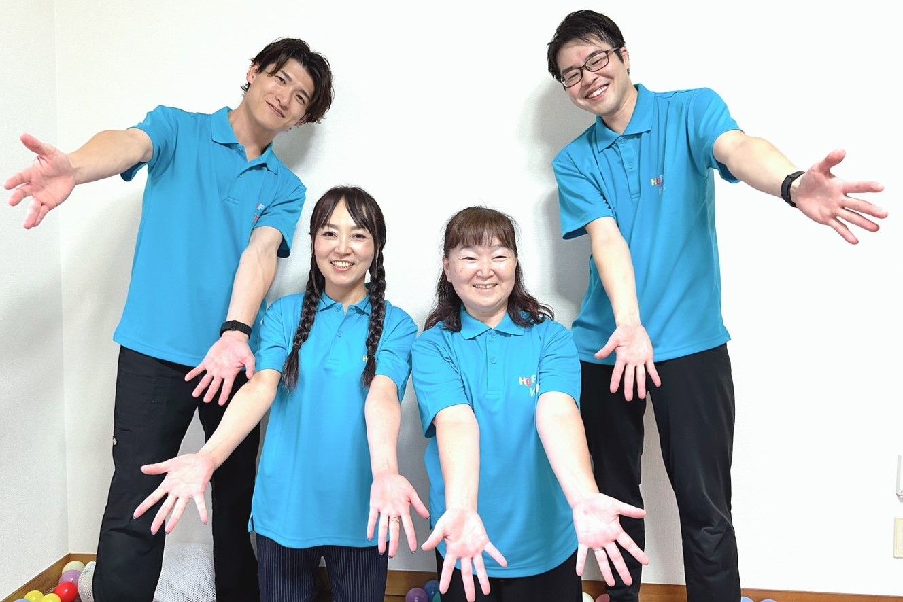
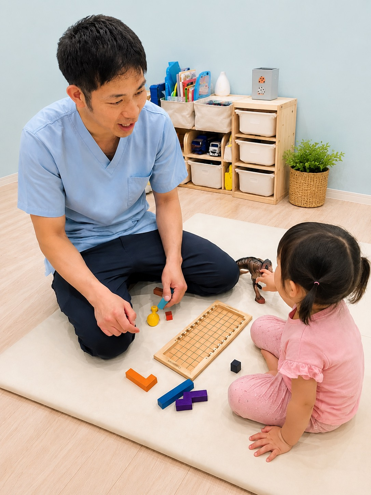
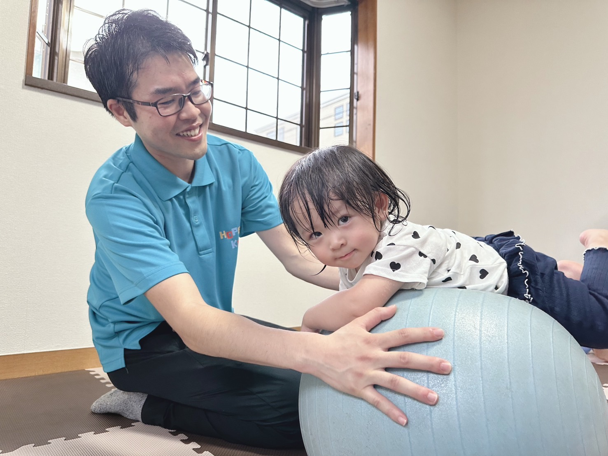
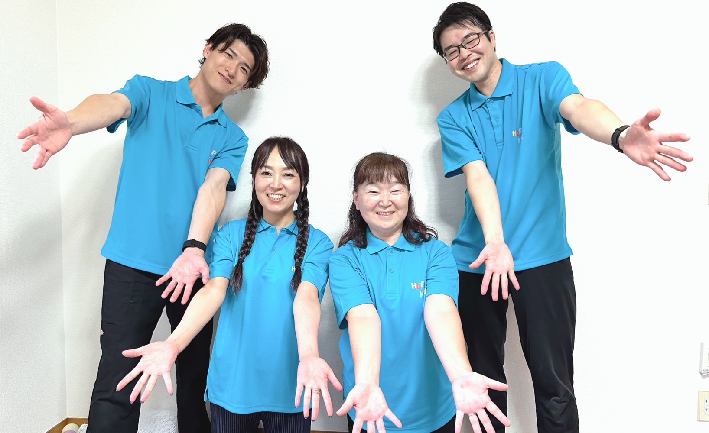
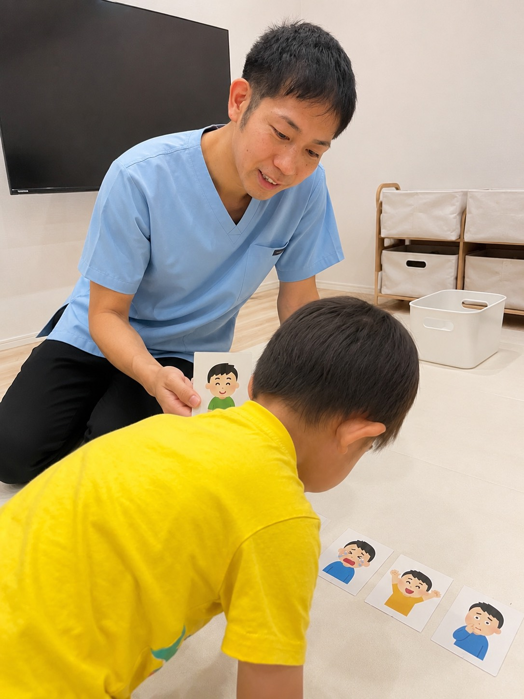
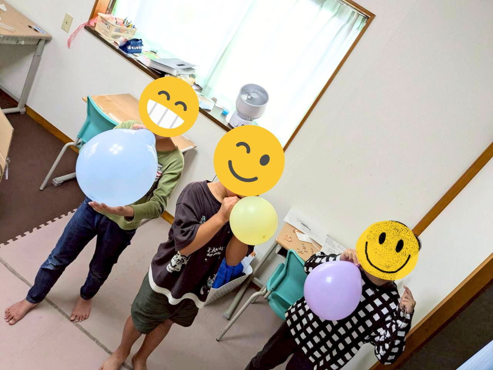
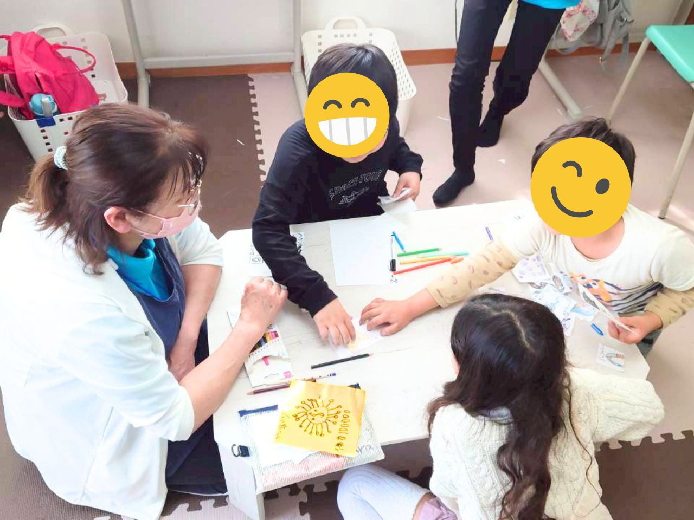
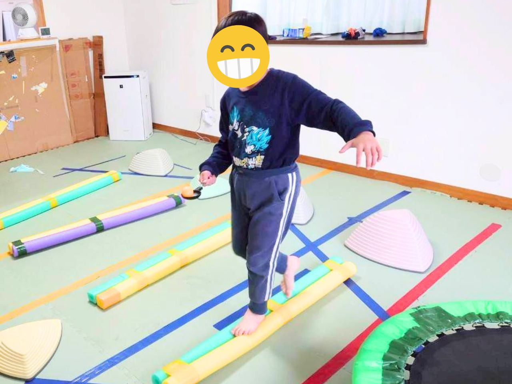
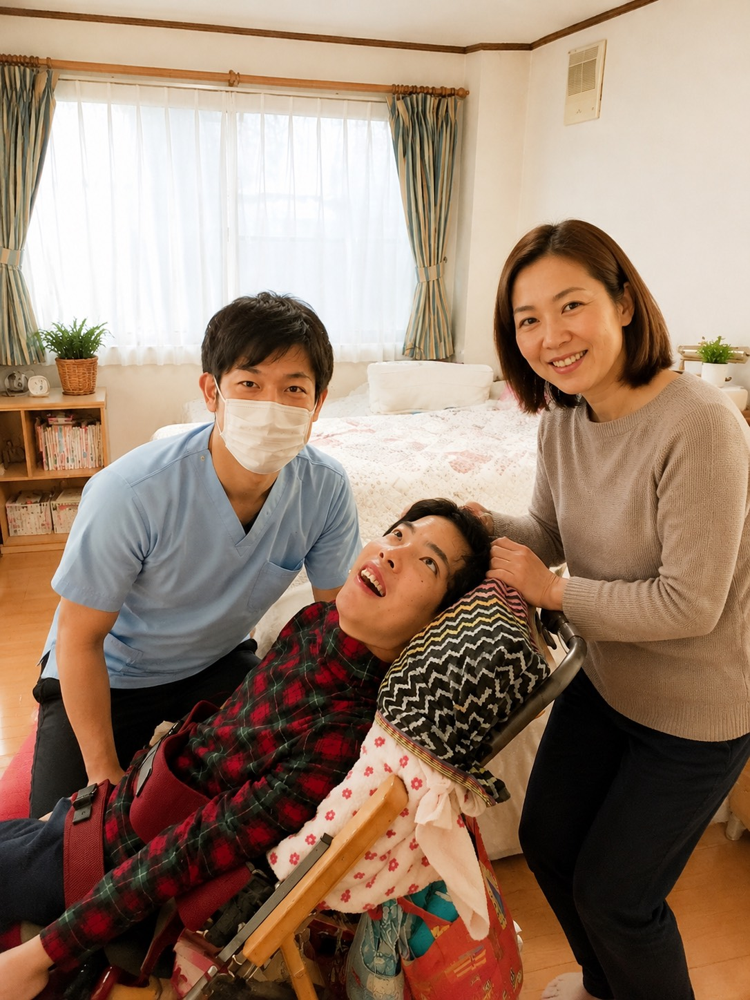
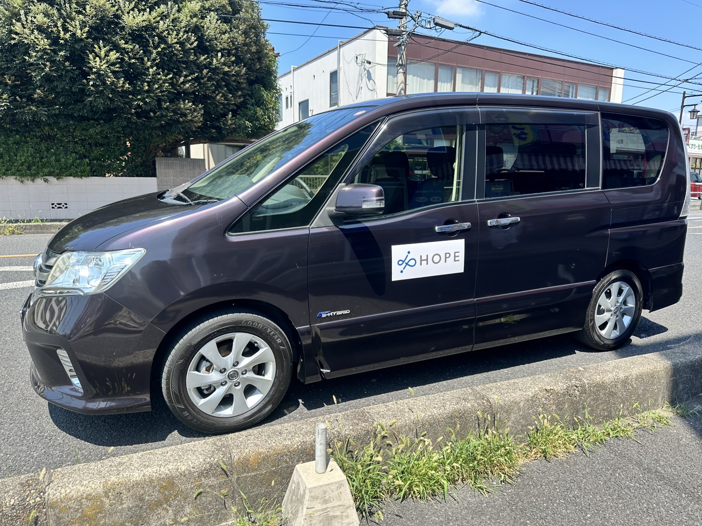

さいたま市を拠点に「医療部門」「福祉部門」を展開する株式会社HOPE。
新規事業も続々スタート、成長真っ只中の会社です。
あなたの専門とアイデアで、次の10年を一緒につくりませんか。
HOPE グループの各事業所で、あなたのキャリアを活かせる仕事があります。詳細ページは各カードからご覧ください。
HOPE Cotoco
小児訪問看護ステーション（2026年10月OPEN）
不登校・引きこもり・情緒や発達に困難をかかえる子どもたちへの訪問看護。子育て経験を活かして、日勤のみでゆったり働ける環境です。スターティングメンバー募集中。
詳しく見る →HOPE KIDS
第一教室（緑区）／第二教室（浦和区）／教室拡大中
走る。跳ぶ。笑う。子どもたちと一緒に本気で動く療育。少人数・アットホーム、外部講師による本格研修が月2回。「みんな仲良い」チームで長く働けます。
詳しく見る →HOPEハウス
共同生活援助・生活支援
障がいのある方が地域で「自分らしく暮らす」ためのグループホーム。日々の生活を一緒に支え、笑顔をつくる仕事です。福祉未経験の方も歓迎。
事業所ページを見る →きしざわ接骨院
HOPE グループの原点となる治療院
地域の方々の「痛み」に長年向き合ってきた接骨院。技術も接遇も、患者さんに寄り添う姿勢を大切にしています。受付スタッフ・柔道整復師を募集。
事業所ページを見る →HOPE LINK
保育園・学校への訪問による発達支援
発達に不安のあるお子さんの保育園・学校での「困った」に、専門職として寄り添う仕事。家庭と園・学校をつなぐ大切な役割です。
事業所ページを見る →バックオフィス要員
HOPE グループ全体を裏側から支えるお仕事
書類整理、電話応対、勤怠・請求のサポートなど。グループ各事業所と関わりながら、現場のスタッフが働きやすい環境を裏方から支えるお仕事です。
メールで問い合わせ →
医療も福祉も、大事なのは「人と向き合う姿勢」。
拡大中の会社だからこそ、これからつくっていく余地が山ほどあります。あなたのアイデアも大歓迎。



利用者さんとも、スタッフ同士とも、素直に笑い合える職場です。「今日、楽しかったね」って言葉が自然に出るのがHOPEらしさ。
困ったときすぐに相談できる先輩と、聞いてくれる同僚がいます。福祉も医療も、チームでやる仕事だから安心。
送り迎え、学校行事、急な発熱……ちゃんと理解のある職場。子育て中のスタッフが多いから、お互いさま文化があります。
医療と福祉が一つの会社にあることで生まれる、他にはない働きやすさとキャリアの広がり。
接骨院、訪問看護、放課後デイ、グループホームなど、複数事業が連携。「医療だけ」「福祉だけ」では届かない支援を、チームで実現できます。
外部講師による専門研修を定期的に実施（費用は会社負担）。未経験からでも根拠のある支援スキルを身につけて、プロとして成長できます。
子育て中、ブランクあり、資格を活かしたい……一人ひとりの働き方に合わせて相談可能。長く働ける環境づくりに本気で取り組んでいます。
医療も福祉も、写真だけでは伝わらない温かさがあります。まずは雰囲気を見てみてください。








医療だけでも、福祉だけでも足りない――両方がつながることで初めて支えられる人がいる。
医療・福祉を通じて、子どもから大人まで、誰もが生まれ育った地域で
安心して暮らし続けられる環境づくりを目指しています。
株式会社HOPE 代表取締役 岸澤 裕太
まずは「話を聞いてみたい」だけでもOK。見学だけの方も大歓迎です。
各求人の詳細ページ、または下記の代表連絡先までご連絡ください。
採用担当より返信。18時以降の面接・オンライン面接も対応可能。
事業所見学と面接。私服OK、履歴書手書き不要。カジュアルに。
ご家庭・現職の事情に合わせて、入職日を柔軟に調整します。
「どの事業所が自分に合うか分からない」というご相談もOKです。